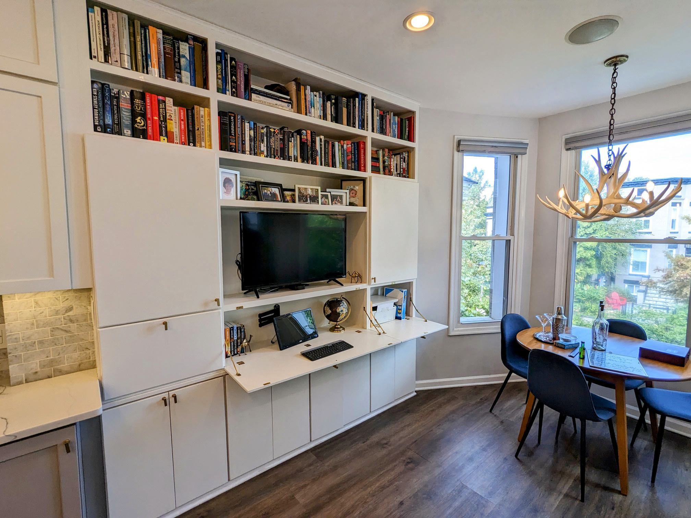
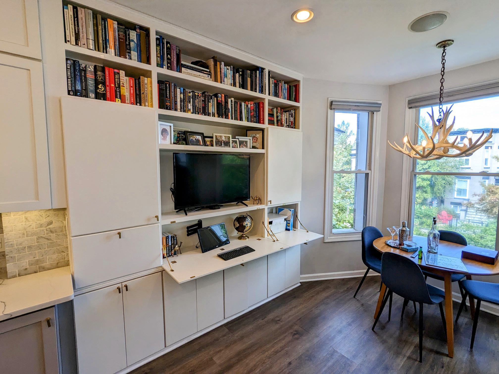

DC Living at Its Finest: 2-Bed with Gourmet Kitchen – Near Metro & Trade Joes
Step into a lifestyle of ultimate convenience in this 2-bedroom, 1.5-bathroom home situated in vibrant Eckington, DC.
Enjoy top-of-the-line upgrades, a “cook's” kitchen with miles of counters, new floors and stainless steel appliances, new stacked washer dryer, along with a private patio perfect for outdoor relaxation.
You're not just renting a home, you're buying a lifestyle only a 10-minute walk to the metro, Union Market dining hall, and Trader Joe's for your grocery needs.
Fitness enthusiasts will relish the neighborhood rock climbing gym, state-of-the-art gym, and adjacent neighborhood pool. Socialize at Big Bear Cafe or unwind at local pubs and eateries like Pub And The People.
Second bedroom is currently used as an office but is large enough for a full or queen sized bed.
Details:
- $2,600/month
- 13 R St NE #2
- 23 minute bike ride to the World Bank
- Available Jan 1, 2023
- Private back deck, and shared patio with grill
- On-street zone 5 parking
- Dogs and cats considered on a case-by-case basis
- “Biker’s paradise” 93 biker’s score, and “very walkable” 84 walker’s score.
This property is a one-of-a-kind opportunity you won't want to miss!
Please reach out directly to Michael Mann mmann1123@gmail.com or +1 (202) 743-4791